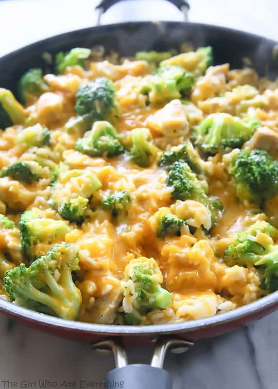

Cheesy Chicken and Broccoli

Description
This comforting Cheesy Chicken and Broccoli casserole is a perfect blend of tender chicken, crisp broccoli, and a rich, creamy cheese sauce. It's a crowd-pleasing dish that's easy to make and packed with flavor.
Ideal for busy weeknights or potluck dinners, this casserole combines lean protein, vegetables, and indulgent cheese in one satisfying meal. The golden, bubbly cheese topping makes it irresistible to both kids and adults alike.
Ingredients
- 2 cups cooked chicken, diced
- 3 cups broccoli florets
- 2 cups shredded cheddar cheese
- 1 can cream of chicken soup
- 1/2 cup milk
- 1/4 cup sour cream
- 1 tsp garlic powder
- Salt and pepper to taste
Steps
- Preheat oven to 375°F
- Steam broccoli until tender-crisp
- In a large bowl, mix chicken, broccoli, and 1 cup of cheese
- In another bowl, combine soup, milk, sour cream, and seasonings
- Pour the sauce over the chicken mixture and stir to combine
- Transfer to a greased baking dish
- Top with remaining cheese
- Bake for 25-30 minutes until bubbly and golden